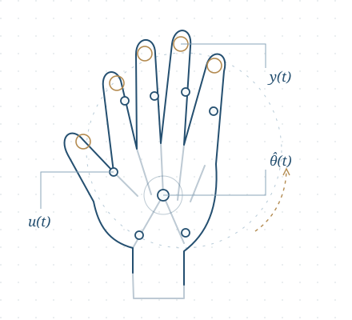

分布式自适应学习与控制
研究多个节点如何利用各自的数据协同学习、估计并控制随机系统。
复旦大学 · 数学科学学院
研究员 · 博士生导师
研究随机系统的自适应辨识与控制，关注分布式学习、稀疏辨识及其数学基础。2026 年 6 月加入复旦大学数学科学学院，此前任南开大学人工智能学院副教授。
gandie@fudan.edu.cn ↗01 / RESEARCH AREAS
随机系统的数学基础与学习方法
研究多个节点如何利用各自的数据协同学习、估计并控制随机系统。
关注如何从带噪观测中识别系统的关键参数与稀疏结构。
关注分布式数据学习与基于反馈的决策方法。
探索学习与估计问题背后的数学理论。
02 / EXPLORING NEXT
计划探索的研究方向
希望将随机系统辨识与自适应估计的研究拓展到灵巧手，探索从关节运动与接触反馈中建立、更新系统模型的方法。

拟探索的问题
如何辨识摩擦、耦合与驱动特性，建立适于在线估计的模型？
在接触条件变化、观测含噪时，如何估计关键参数并刻画不确定性？
如何将在线更新的模型用于控制，并分析闭环中的估计与稳定性？
03 / SELECTED WORK
SIAM Journal on Control and Optimization, vol. 64, no. 4, pp. 2641–2670, 2026.
DOI ↗Google Scholar ↗SIAM Journal on Control and Optimization , vol. 63, no. 1, pp. 650–675, 2025.
Google Scholar ↗IEEE Transactions on Automatic Control (Regular paper) , vol. 69, no. 11, pp. 7479–7492, 2024.
Google Scholar ↗Automatica, vol. 151, p. 110958, 2023.
Google Scholar ↗